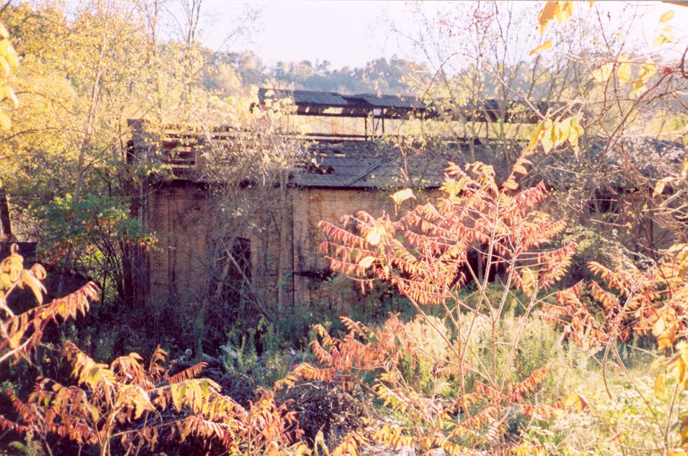
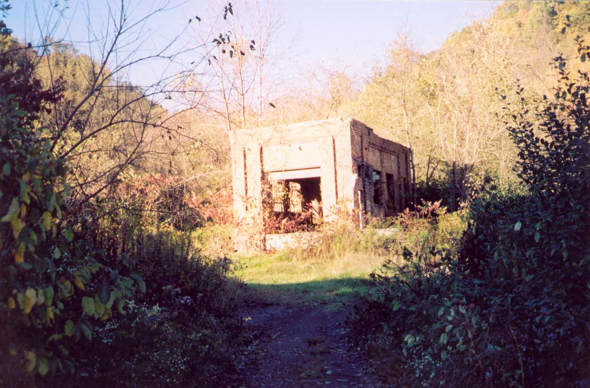
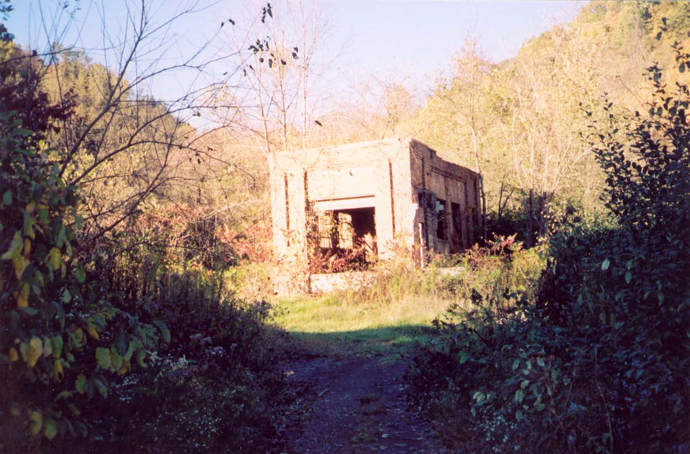
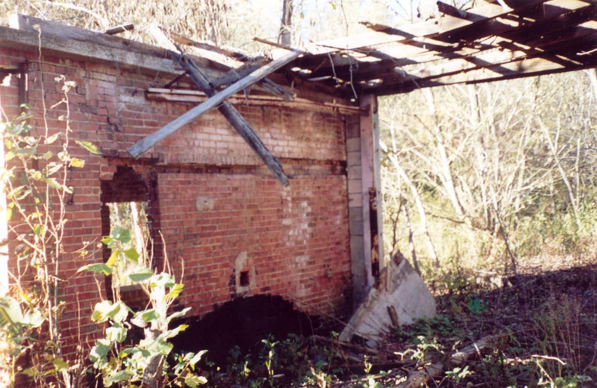
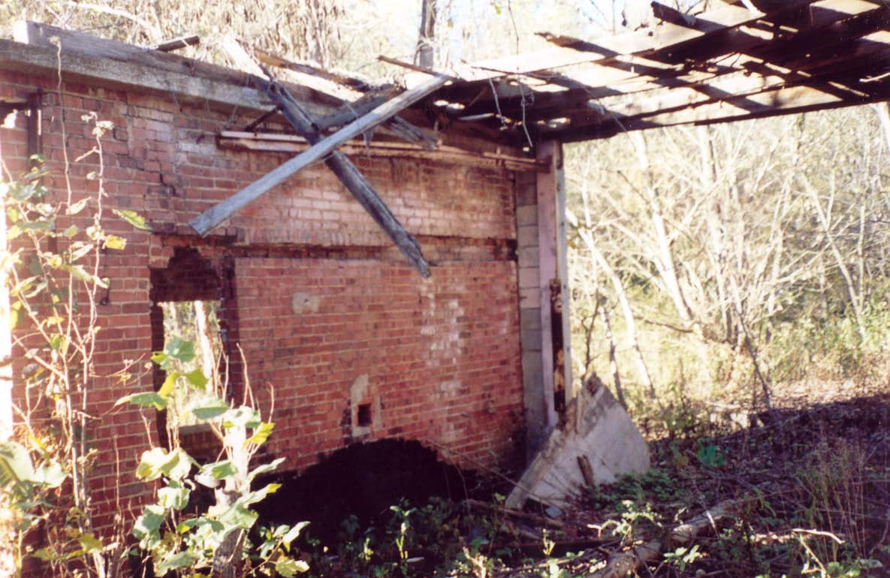

October is upon us, which means lots of good things. The Circleville Pumpkin Show is in full swing, as is the Barnesville Pumpkin Festival and assorted other seasonal shows, festivals, and fairs. The leaves are turning, the weather is cooling down. And, of course, everybody's favorite satanic holiday is nearly upon us.
I am working on a set of new hauntings to unveil for the season, but for now let me present a newly-researched legend which turns out to be based on real events: the ghost stories associated with 1950s serial killer Cletus Reese and his farm, commonly known as Murder Ridge.
It's a story I've been hearing about for years, and I had it listed in my Coshocton County hauntings, but I never really thought there was any truth to it. Boy was I wrong. After hearing vague recollections from readers like, "Cletus was real; my grandma remembers when it happened," I did a little more research. With the help of the brilliant researcher Nancy Pennington I was able to discover the articles (mainly from the Coshocton Tribune) that tell the story of the real serial killer behind Murder Ridge. He is known to have killed three people and buried them in shallow graves on his property, but the paper speculated even then that there were more to be found:
Cletus died in 1966 in the State Hospital in Lima, but the legends about his restless spirit and those of his victims, both found and unfound, continue to this day. It's a grade-A example of the way community memory can turn a dark chapter of local history into a dark piece of local myth.
I've finished my series of lectures at Zane State College, and I want to thank everyone who came and endured the spectacle of me talking for three hours. Thanks also to Gary King, who booked me at the college, and to everyone at the Avondale Youth Center, where Gary took me afterward. The kids there showed me the grave of their resient ghost, Jack, as well as the places in the former orphanage where he's been sighted.
I was interviewed recently for the Athens Post and will be interviewed today for a Columbus Dispatch story about haunted houses. In addition, I'll be speaking at the Upper Arlington Public Library's Lane Road branch on Monday, October 30. You can register online at the library's website, by using this link. These are the event details:
Monday, October 30
7 PM - Upper Arlington Public Library - Lane Road Branch
"Ohio Hauntings for Halloween"
Register HERE
Hello and thanks to the class at Hamilton Township High School where, on October 3rd, I gave a speech about Ohio ghosts and related topics. They couldn't have been a better audience, and nearly everyone had new ghost stories to share with me.
NAME THAT BUILDING

Abandoned Brick Complex; Coke Factory?
State Route 147 or 149 - Bellaire, Ohio
This time around our Name That Building candidate is a real tricky one. Not only is it very old and very ruined, hard to see from the road, and located in a rural area outside a very small city--but I can't even remember which highway it's on.
It's a tough one. I took these pictures at this exact time of year in 2004, so you can imagine how difficult it must be to get a good look at the ruins in high summer. For the most part the place is small buildings constructed from tan bricks, each in at its own point in the falling-to-pieces process.
The main building is long with a two-layer vented roof, styled like a steel mill. Inside it's refreshingly free of weeds. An upstairs level that used to cover about a quarter of the interior area is half-fallen down, while enormous holes gape in the ceiling.
I have many more pictures of the place, but before I can put up a section I need to know just what it was so I can do the proper research. The guide on my visit, my friend Greg Gossett, is a lifetime resident of Belmont County with vast knowledge of the area, but his only memory of what the place had been was that it had something to do with manufacturing coke--a clean-burning, high-energy fuel made from bituminous coal and used in iron smelting, among other things. Anyone who can confirm this or give an alternative, along with providing a name for the company which built and used these wasted buildings, will really impress the hell out of me.
I'll post again soon--but don't I always say that? You can count on a pre-Halloween update, though, so check back in the next few days.
I am reading:
FICTION - Cabal, by Clive Barker
NONFICTION - Lies My Teacher Told Me: Everything Your American History Textbook Got Wrong, by James W. Loewen


 

 
